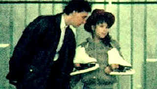

| Julien
Donkey-Boy/C+,B |
| New
Line/1999/99/ANA 1.85 |
After seeing Gummo and almost totally failing to connect to
writer/direcotr Harmony Korine's work, I sat down to watch Julien Donkey-Boy with a healthy
dose of cynicism in my pants. The pretentious Dogma certificate that precedes the opening credits
of the film reminds one of the British stamp of content approval of 1940s films should come as a
warning to most viewers. This film ain't gonna look too good. In fact, Korine's hand-held digital
filming making is often nauseatingly unsteady. Talk about grain. The grain elements in Julien
Donkey-Boy are so large images almost appear composed of snow flakes. After a while, some of
the compositions remind you of the pointillist work of Georges Seurat. Korine's sophamore film is
an interesting mix of repugnance, emotion, and awkward grace.
Korine based the raw, very raw, material for Julien Donkey-Boy, on his
skitzophrenic Uncle Eddy. The world surrounding Julien, the insane composition of his family,
his wandering mind, the love within him, are all explored by Korine. The structure is pretty free
form, but it does follow an intelligible arc, examining variious aspects of the lives of Julien and
his family. The parade of characters and situations seem natural to the world Korine has created
for Julien. The insane motion of the camera, the unusual perspectives, do successfully echo some
semblance of derangement. If you can get through the barrier of the difficult cinematic choices,
there are some surprisingly powerful emotional elements to Julien Donkey-Boy.
 |
| Julien and a young blind friend. © New
Line |
Ewen Bremner is pretty amazing as Julien. The performance reminds one a
great deal of Geoffrey Rush's tour-de-force perfromance as in Shine, however this is much more raw
stuff. I still find it hard to believe that there was an actor playing Julien. Bremner finds a
remarkable consistency to the character.I can't imagine that this guy slept too well at night after
spending all those hours under the skin of Julien. Werner Herzog, the individualistic German
filmmaker (Fitzcarraldo, Aguirre: The Wrath of God) plays the father with horrifying
tunnel vision. I cannot believe that some of the stories that Herzog's character relates were not
improvised by the actor. Myabe he should share in teh writing credit. Or maybe I am wrong and
Korine wrote such a powerful character that the actor disappeared beneath the script. Chloe Sevigny
disappears under an unruly red wig as Julien's innocent sister Pearl.
What's it all look like? I suppose it's true to Korine's intent. In
that respect, it's an excellent transfer. It is, however, almost unwatchable for the most part. You
have to go with the flow on this one. The all-pervasive grain, hidden cameras luring unsuspecting
people into the filmmaking process sacrifice image for naturally unadorned performance, but it's
all artifice after all, isn't it. The sound it inconsistent, but the Puccini aria that repeats
itself against the recurring ice skating image becomes transendental in its beauty. Dialogue,
though often delivered in difficult patterns by lead actor Ewen Bremner, is easy enough to
understand. New Line includes a short Julien Donkey-Boy making of produced by Korine. It
provides an insight intot he director's thought process and what he wanted to achieve with the
film.
|
|
|
|

 Gary Morris's insightful publication Bright Lights
Film Journal turns the celluloid in films from a unique perspective. Click on the image above
for more pure movie views. Gary Morris's insightful publication Bright Lights
Film Journal turns the celluloid in films from a unique perspective. Click on the image above
for more pure movie views.
Imaging Science Foundation
The Imaging Science Foundation promotes proper standards in home theater viewing. ISF trained
technicians offer monitor calibration services to consumers. The difference in a properly
calibrated monitor can be astounding. Click on the image to find an ISF member near you.

The Feature Archive
has articles ranging from Akira
Kurosawa to Blonde Bimbos.
Movie Rage: Death in the Aisles
Everyone knows what it feels like to get angry at the
movies these days. Here's a humorous but not so delightful view of big screen misery.

Ghost
Dog: Way of the Samurai

Ancient Japanese samurai tradition compared to new world Italian
mobsters filtered through the imagination of Jim Jarmusch. Forest Whitaker is outstanding.
|